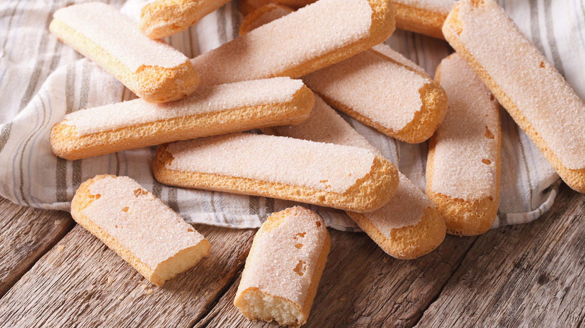

El origen del bizcocho de soletilla se sitúa en Francia en el siglo XV, en la corte del Duque de Saboya. Se conocían con el nombre de biscuit à la cuillère (bizcocho en la cuchara), debido a que se ponía la masa en una cuchara para después hornearlo. Posteriormente en tiempos de Napoleón, el ministro de exteriores Charles Maurice de Talleyrand, en un alarde de inteligencia y despotismo a partes iguales, pidió al pastelero Antonin Carême que alargara los bizcochos para que pudiera mojarlos en su vaso, dando lugar a la forma actual.
